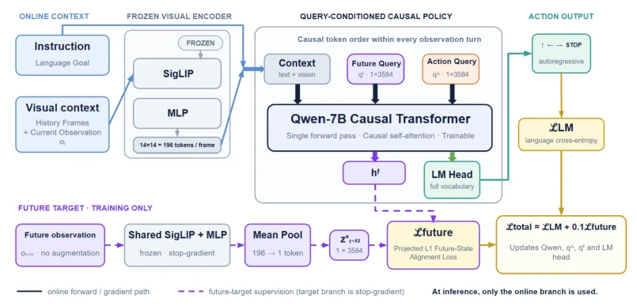

这篇论文给端到端 VLN 提了个醒，光模仿动作不够，得学会“看未来”。作者没搞复杂的生成式世界模型，而是耍了个巧劲——在 Transformer 里塞两个可学习 token，一个负责“预知未来”，一个负责“执行当下”。训练时让“预知”对齐专家轨迹的远端画面，推理时直接扔掉预测分支，只留 token 做前缀。这招确实灵，尤其在长程导航上，SR 能涨几个点。但话说回来，整体提升也就 1-3 个百分点，属于“锦上添花”而非“脱胎换骨”。而且依赖专家轨迹的未来帧，本质上还是行为克隆的变种，离真正的“想象”还有距离。对于追求 SOTA 的团队，这是个低成本优化方案；对于追求通用智能的，这离 Self-supervised World Model 还差得远。
This paper serves as a reminder to end-to-end VLN that merely imitating actions is insufficient; one must learn to "see the future". The authors did not employ complex generative world models, but instead used a clever trick—inserting two learnable tokens into the Transformer, one responsible for "predicting the future" and one for "executing the present". During training, the "prediction" is aligned with distant frames of the expert trajectory; during inference, the prediction branch is directly discarded, keeping only the token as a prefix. This approach is indeed effective, especially in long-horizon navigation, where SR can increase by a few points. However, overall improvement is only 1-3 percentage points, belonging to "icing on the cake" rather than "fundamental transformation". Moreover, relying on future frames of expert trajectories is essentially a variant of behavior cloning, still far from true "imagination". For teams pursuing SOTA, this is a low-cost optimization scheme; for those pursuing general intelligence, this is far from a Self-supervised World Model.
研究动机Motivation
现有的端到端 VLN 方法，如 StreamVLN [Wei et al., 2025] 和 NaVid [Zhang et al., 2024b]，主要依赖行为克隆（Behavior Cloning）直接映射指令和观测到动作。这种范式的问题在于，它只监督“下一步做什么”，却没强制策略内部状态去预测“未来会看到什么”。在连续导航环境中，局部合理的动作累积起来会导致轨迹偏差，长程任务尤其明显。作者先做了一个诊断实验：如果测试时直接给模型看专家轨迹未来的图像，性能会暴增（SR 从 29% 到 71%），证明未来视觉信息确实有用。但这不可部署。因此动机很明确：能不能在不访问未来图像推理的情况下，利用未来信息作为训练时的监督信号，提升策略的预测性，特别是长程一致性？
Existing end-to-end VLN methods, such as StreamVLN [Wei et al., 2025] and NaVid [Zhang et al., 2024b], mainly rely on Behavior Cloning (Behavior Cloning) to directly map instructions and observations to actions. The problem with this paradigm is that it only supervises "what to do next", but does not force the policy internal state to predict "what will be seen in the future". In continuous navigation environments, locally reasonable actions accumulate to cause trajectory deviation, especially obvious in long-horizon tasks. The authors first conducted a diagnostic experiment: if the model is shown expert trajectory future images directly at test time, performance surges (SR from 29% to 71%), proving future visual information is indeed useful. But this is not deployable. Therefore the motivation is clear: can we, without accessing future images during inference, utilize future information as a training supervision signal to improve the strategy's predictiveness, especially long-horizon consistency?
The core of FSC-VLN is a lightweight extension on existing VLM architecture. The overall process is divided into training and inference two stages. During training, the model receives current instructions and historical observations, generating visual Tokens via a frozen SigLIP visual encoder. The key innovation lies in inserting two learnable prefix Tokens: qF (future query) and qA (action query). qF's hidden state is forced to align with the visual Embedding of expert future observation o_{t+Δ} after Δ steps, this target is provided by the frozen visual branch and gradients are blocked. qA is located after qF, obtaining qF's prediction information via causal attention mechanism, thereby generating actions. During inference, that branch calculating future targets is discarded, only keeping qF and qA as prefix Tokens participating in single Causal Prefill, no extra forward propagation needed. This design both retains causal VLM inference efficiency, and through auxiliary task lets strategy implicitly learn environment dynamics.

Figure 1: Overview of FSC-VLN. A frozen visual encoder maps the current and historical observations into visual tokens that, together with the instruction, form the online context. We prepend a learnable future query qF and an action query qA to create a future-supervised causal prefix for action generation. During training only, a target branch encodes the expert-trajectory future observation ot+∆with the same frozen visual modules to provide a stop-gradient embedding target for aligning qF ; this branch is discarded at inference.
Experiments are conducted on R2R val-unseen, baseline is StreamVLN. Results show FSC-VLN improves on SR/OSR/SPL, but overall magnitude is not large (SR +1.47%), main gains concentrated in long-horizon trajectories (Long-horizon SR +3.85%). This verifies the help of future state supervision on long-horizon consistency. Ablation experiments show separating future query qF and action query qA is necessary, after merging although Oracle SR slightly rises, SPL drops, indicating dedicated action query helps convert prediction information into efficient decision. Additionally, authors also through "privileged input diagnosis" confirmed the huge value of future images themselves for decision, providing rationality support for method.